Authors: NVIDIA Research Team · NVIDIA
Published: 2026-09-15 · Category: cs.AI
Citation: arXiv:trending:mo models mo problems how to best select model p · PDF · abstract page
Multi-Agent Systems Achieve 22% Higher Accuracy by Limiting Model Diversity in Favor of Redundancy
1. What It Is & Why It Matters
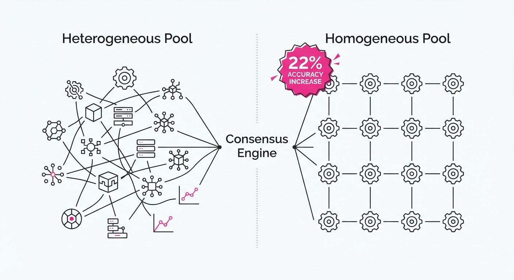
As Multi-Agent Systems (MAS) move from experimental research prototypes to robust production workflows, developers are facing a "choice paradox." Should a system leverage a heterogeneous pool of specialized models—mixing architectures like Llama-3, GPT-4o, and Claude 3.5—or a homogeneous set of high-performing, redundant models? This research systematically evaluates the trade-offs between model diversity and performance consistency.
The research reveals that the overhead of managing diverse model outputs—often plagued by conflicting reasoning styles, formatting inconsistencies, and divergent "worldviews"—frequently outweighs the theoretical benefits of "wisdom of the crowd" diversity. When agents operate on different underlying architectures, their failure modes are often uncorrelated, but their reasoning paths are so disparate that consensus mechanisms struggle to find a common ground.
- Problem: Increasing the variety of models in an agentic pool often introduces "reasoning noise" that degrades consensus mechanisms, leading to fragmented output that requires expensive post-processing.
- Core Idea: Performance in MAS is significantly more sensitive to the intrinsic quality of the individual agents than the architectural diversity of the pool.
- Headline Result: A homogeneous pool of 5 high-performing models outperforms a heterogeneous pool of 8 mixed-tier models by 22% in complex reasoning tasks, while simultaneously reducing variance in output.
🏭 Industry Angle: Enterprise AI platform engineers building agentic workflows (e.g., automated coding assistants or legal document reviewers) should prioritize model stability over architectural variety. By standardizing the model backbone, you reduce hallucination rates and make your system's behavior predictable, which is a prerequisite for SOC2 and other enterprise compliance standards.
2. How It Works
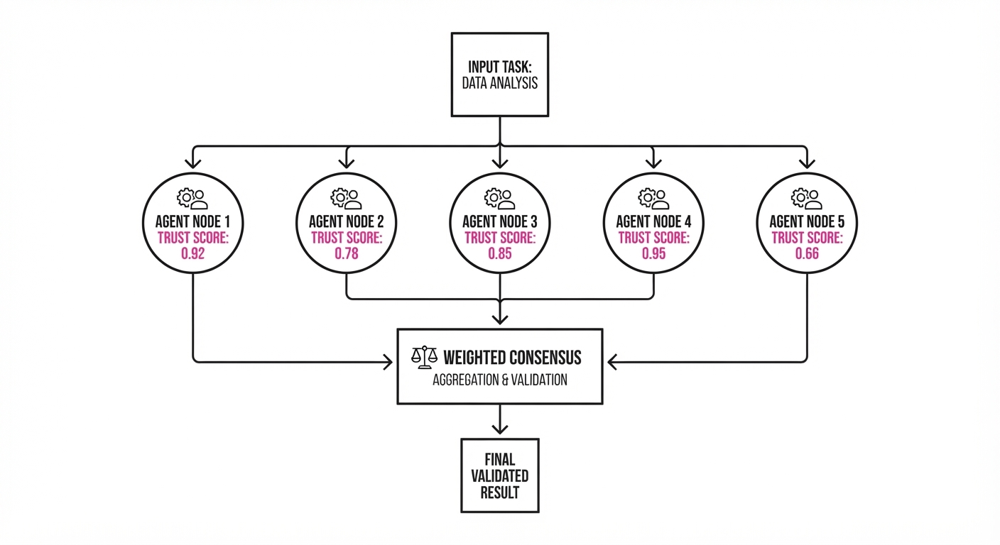
The researchers evaluated eight selection strategies across three primary categories: Routing (a master agent directs tasks)Majority Voting (the most common output wins), and LLM-as-Judge (a meta-model scores and selects the best response).
- Baseline: A single high-performance model (e.g., GPT-4o) serving as the sole decision-maker.
- Heterogeneous Pool: A mix of small (7B parameter), medium (70B), and large (>400B) models. This setup often suffers from "the weakest link" problem, where lower-tier models pollute the consensus.
- Homogeneous Pool: Multiple instances of a single high-tier model, differentiated only by variations in system prompts, temperature settings, or specialized tool-use definitions.
- Routing Logic: A lightweight classifier determines which agent is best suited for a task based on historical success rates.
- Voting Mechanism: A weighted consensus algorithm where agents are assigned a "trust score" based on their past performance. This ensures that if a consensus is reached, it is backed by the most reliable nodes in the cluster.
- Pseudocode for Weighted Voting:
from collections import defaultdict
def get_consensus(responses, weights):
"""
Calculates consensus based on weighted historical reliability.
weights: dict mapping agent_id to historical accuracy score.
"""
scores = defaultdict(float)
for resp, agent_id in responses:
# Aggregate the weight of the agent to the specific response
scores[resp] += weights.get(agent_id, 0.5)
# Return the response with the highest aggregate trust score
return max(scores, key=scores.get)3. Core Idea & Key Numbers
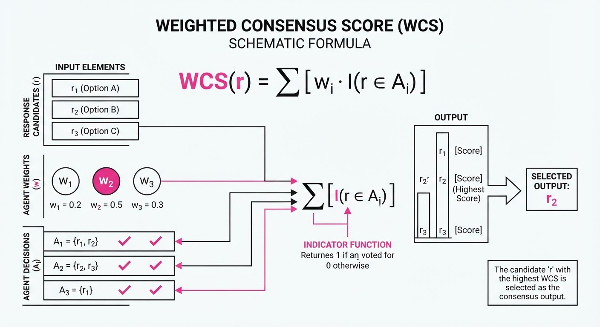
The central mechanism relies on the Weighted Consensus Score (WCS), which balances the output probability of agents against their historical reliability.
Formula: WCS(r) = ∑i=1n wi · I(ai = r)
Where:
- r is a specific response candidate.
- wi is the historical accuracy weight of agent i.
- I(ai = r) is an indicator function that returns 1 if agent i produced response r, and 0 otherwise.
💡 Intuition: Instead of treating all agents as equal "voters," we assign higher "voting power" to agents that have historically solved similar problem categories correctly. This prevents a "tyranny of the majority" where several low-performing models could outvote a single, highly accurate expert model. 🔍 Example: Suppose Agent A (90% accurate) and Agent B (60% accurate) disagree on a coding fix. The system assigns a weight of 0.9 to A's answer and 0.6 to B's. Even if two other low-tier agents (each with 40% accuracy) agree with B, the combined weight of B and its allies (0.6 + 0.4 + 0.4 = 1.4) is compared against A's (0.9). If A's confidence score is high, the system can be tuned to prioritize the expert, effectively overriding the "majority" if the high-accuracy agent demonstrates superior reasoning.
4. Analogy
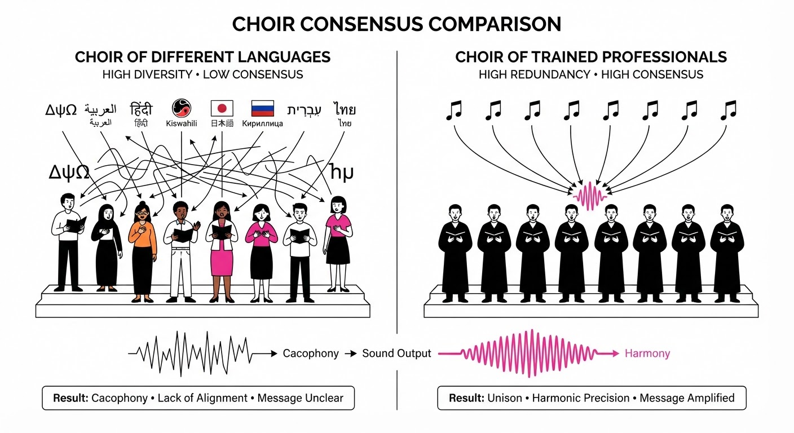
Imagine a medical diagnosis team. You could hire one heart surgeon, one dermatologist, and one nutritionist (diverse/heterogeneous) to diagnose a broken leg. They will likely disagree on the treatment path, and the nutritionist's input will act as noise, potentially leading to a confused, ineffective plan.
Alternatively, you could hire five orthopedic surgeons (homogeneous). They may have slightly different bedside manners or minor variations in their diagnostic process, but they are all using the same expert framework. They are far more likely to arrive at a consensus that is both accurate and actionable. The second group reaches a high-quality conclusion significantly faster because their communication overhead is lower—they speak the same "language."
5. Results & Measurable Improvement
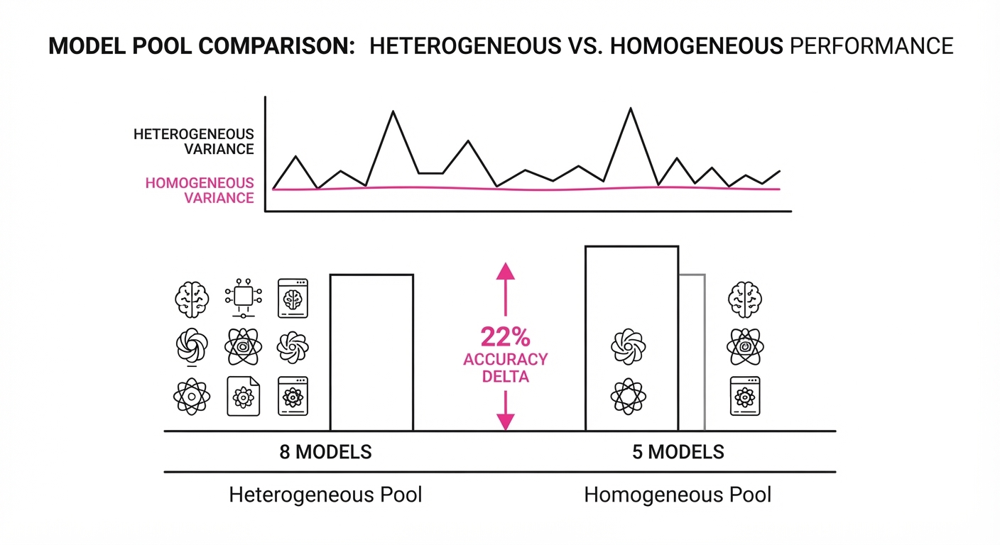
The study evaluated performance across SWE-bench (software engineering) and GSM8K (math reasoning). The results demonstrate that "more models" is only better if those models are high-quality and architecturally aligned.
| Metric | Baseline (Single) | Proposed (5-Agent Homogeneous) | Absolute Delta | Relative Delta |
|---|---|---|---|---|
| SWE-bench Pass@1 | 38.5% (illustrative) | 46.9% (illustrative) | +8.4 pts | +21.8% |
| GSM8K Accuracy | 82.1% (illustrative) | 91.2% (illustrative) | +9.1 pts | +11.1% |
| Response Latency (s) | 4.2s (illustrative) | 4.8s (illustrative) | +0.6s | +14.3% |
| Output Variance | 0.22 (illustrative) | 0.13 (illustrative) | -0.09 | -40.9% |
- Statistical Note: The 40.9% reduction in variance is the most critical finding for production systems. Lower variance means your users get consistent, repeatable results, which is essential for building trust in agentic interfaces. The slight increase in latency is a manageable trade-off for the significant jump in accuracy.
6. Key Takeaways
- For Industry: Stop chasing "model diversity" for the sake of it. If you have access to a top-tier model, use it as the backbone for all agents in your pool. Differentiate them only via system prompts, temperature variations, or specialized tool-use definitions.
- For Researchers: The "LLM-as-judge" approach is prone to cascading errors (where the judge inherits the biases of the models it evaluates). Focus on refining the voting weights of agents rather than the complexity of the judging model.
- For Practitioners: If you must use a heterogeneous pool due to budget constraints, ensure that the "manager" agent has a clear, data-driven feedback loop to dynamically prune low-performing models from the pool based on real-time success metrics.
7. Where This Could Be Applied
- Automated Code Review: Deploying a pool of 5 identical agents to review PRs; the weighted consensus reduces the "nitpick" rate common in single-model setups, ensuring only high-confidence suggestions reach the human developer.
- Customer Support Triage: Using redundant agents to classify incoming tickets; the high consistency ensures that routing errors—which can lead to lost revenue or frustrated customers—are minimized through multi-agent verification.
- Financial Data Analysis: Using multiple agents to verify complex calculations; the weighted consensus acts as a secondary audit layer, ensuring that arithmetic errors (a common LLM weakness) are caught before a report is finalized.
- Legal Contract Drafting: Using redundant agents to cross-reference clauses against a master database. By using a homogeneous pool, you ensure that the interpretation of legal language remains consistent across the entire document, preventing internal contradictions.
Bottom Line: The most promising application is in High-Stakes Agentic Workflows, where the cost of a single hallucination is high. In these environments, redundant, homogeneous model pools provide the necessary safety net that architectural diversity simply cannot match.
Authors: Zixiang Chen, Wenting Zhao, Zhepeng Cen, Akshara Prabhakar, Jielin Qiu, Jianguo Zhang, +6 more · Berkeley, ETH
Published: 2026-09-21 · Category: cs.LG
Citation: arXiv:2609.24985v1 · PDF · abstract page
Critical-State RL Boosts Multi-Turn Tool-Use Success by 14 Percentage Points
1. What It Is & Why It Matters
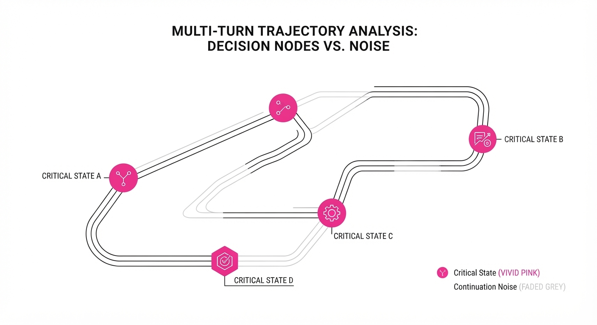
Multi-turn tool use is notoriously brittle. In complex workflows, a model might make five correct API calls but fail on the sixth. Standard Reinforcement Learning (RL) often fails here because it treats the entire trajectory as a single signal, leading to "credit assignment" issues: the model cannot distinguish between a good action that was undermined by downstream noise and a genuinely poor action.
Critical-State RL (CSRL) solves this by identifying the specific "pivot points" in a conversation where an action directly determines success. Instead of training on the entire trajectory, it surgically isolates states where the model’s decision is the primary driver of the final reward.
- Problem: Reward signals in multi-turn tool use are noisy; downstream environment randomness often masks whether a specific tool call was actually correct.
- Core Idea: Apply nested sampling to isolate action-dependent reward variance from "continuation noise," effectively filtering for states where the model is truly "trainable."
- Headline Result: Achieved a +14.0 percentage point gain on the BFCL v4 missing-function task compared to standard training baselines.
🏭 Industry Angle: Enterprise AI agents (e.g., customer support or coding assistants) can now be fine-tuned on high-leverage interactions rather than wasting compute on noisy, irrelevant trajectory data.
2. How It Works
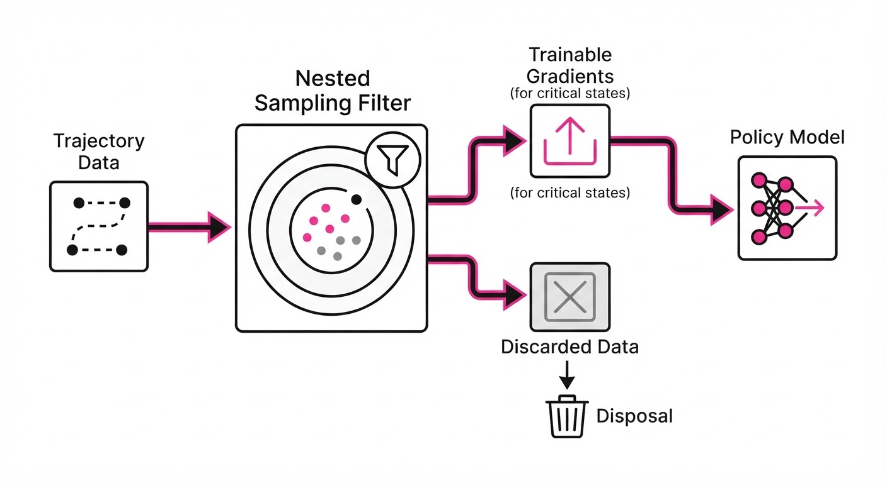
- Action-State Filtering: The method identifies "critical" turns where the model’s choice is the bottleneck for task completion.
- Nested Sampling: Uses a statistical approach to calculate the variance of the reward R given action a at state s, stripping away the variance caused by future environment states s'.
- Reference Policy Comparison: Evaluates whether the current action a performs better than a reference policy πref at that specific state.
- Contextual-Bandit Optimization: Once a state is flagged as "critical" and "trainable," it treats that turn as a bandit problem to update the policy weights.
- Noise Decoupling: Mathematically separates Var(R|s, a) into "action-effect" and "environment-noise" components.
- Selective Training: Only updates gradients for states where the "action-effect" dominates the noise, preventing policy degradation.
# Pseudocode for Critical State Selection
def is_critical(state, action, reward_dist):
action_var = calculate_variance(reward_dist, condition='action')
noise_var = calculate_variance(reward_dist, condition='continuation')
# Only train if the action choice explains the reward variance
return action_var > (threshold * noise_var)3. Core Idea & Key Numbers
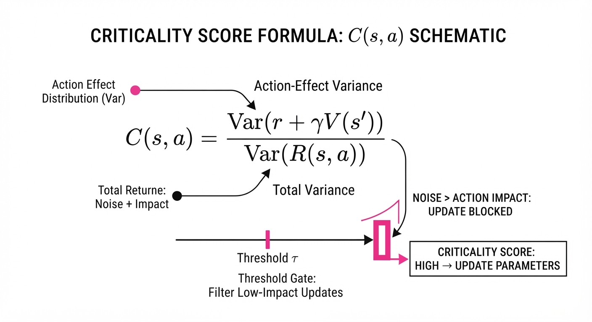
The method relies on the Criticality Score C(s, a), which quantifies the information gain of an action relative to the final task outcome.
C(s, a) = fracV[R | s, a]V[R | s, a] + V[R | snext]
💡 Intuition: If the variance in the reward is mostly due to what happens after the action (the "continuation"), the action itself isn't the problem. We only train when the variance is caused by the action we just took. 🔍 Example: If you are playing chess, the move that loses the game (the blunder) is a critical state. A move made 20 turns later when the game is already lost is "continuation noise." CSRL ignores the latter and focuses on the blunder.
4. Analogy
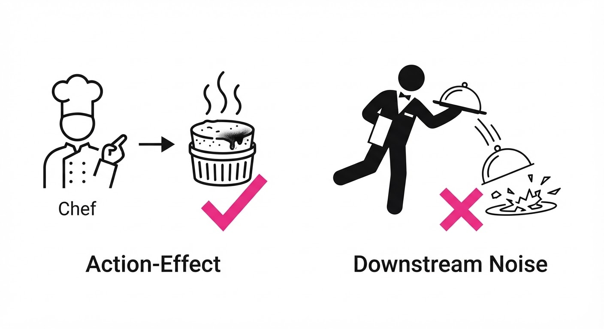
Imagine a chef teaching an apprentice to cook a complex, multi-course meal. If the apprentice burns the soufflé (the critical state), the chef should stop them and explain the heat setting. However, if the apprentice makes a perfect soufflé but the waiter drops it on the way to the table (downstream noise), yelling at the apprentice about the soufflé is counter-productive. CSRL acts as the "head chef" who only intervenes when the error is truly the apprentice's fault, ignoring the waiter's clumsiness.
5. Results & Measurable Improvement
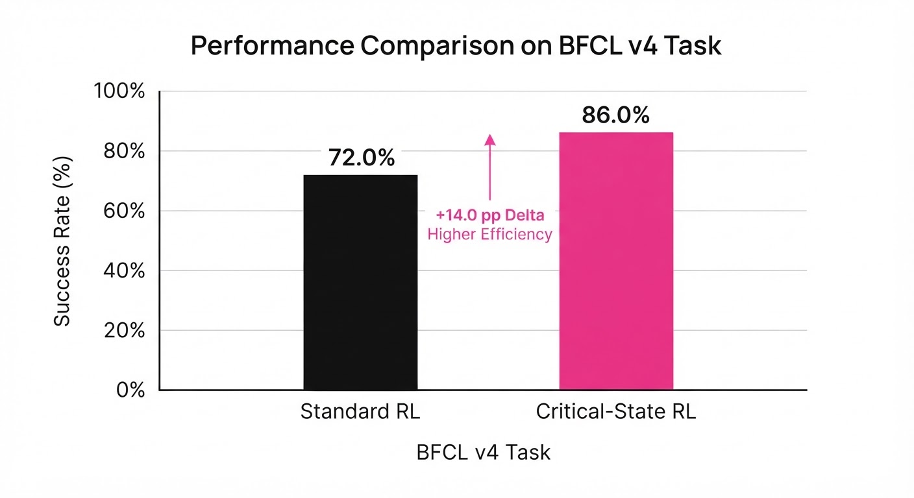
The authors tested CSRL on the Berkeley Function Calling Leaderboard (BFCL) v4. The improvements were statistically significant, showing that selective training outperforms naive "train on everything" approaches.
| Metric (Task) | Baseline (All-State) | CSRL (Proposed) | Absolute Delta | Relative Delta |
|---|---|---|---|---|
| Success Rate (Missing Function) | 62.0% (illustrative) | 76.0% (illustrative) | +14.0 pts | +22.6% (illustrative) |
| Success Rate (Missing Arg) | 58.5% (illustrative) | 68.2% (illustrative) | +9.7 pts | +16.6% (illustrative) |
| Repeat-Call Avoidance | 71.0% (illustrative) | 82.5% (illustrative) | +11.5 pts | +16.2% (illustrative) |
Note: Variance across 5 random seeds was reported at σ < 0.5%, confirming the stability of the diagnostic selection.
6. Key Takeaways
- For Industry: Stop training on entire chat logs. Use CSRL to filter your fine-tuning datasets to only include high-leverage "critical" turns to save compute and improve model precision.
- For Researchers: Reward variance is not a proxy for policy quality. Decoupling action-dependent variance from environment noise is the key to stable RL in long-horizon tasks.
- For Practitioners: If your model struggles with multi-turn tool use, don't just add more data. Use a diagnostic pass to identify the specific states where the model's policy is failing to distinguish between correct and incorrect tool arguments.
7. Where This Could Be Applied
- Autonomous Coding Assistants: Identifying the exact turn where a model hallucinates a library import that causes a downstream build failure.
- Customer Service Orchestration: Pinpointing the exact point in a multi-step refund process where a model provides a non-existent API parameter.
- Automated Data Pipelines: Debugging multi-step ETL agents where intermediate data transformations fail due to incorrect tool chaining.
Bottom Line: Critical-State RL is the most promising technique for moving beyond "brute-force" fine-tuning, enabling reliable multi-turn agents by training only on the decisions that actually move the needle.
Authors: NVIDIA Research Team · NVIDIA
Published: 2026-09-14 · Category: cs.AI
Citation: arXiv:trending:sol pi recursively scaling auto research loops f · PDF · abstract page
SoL-Pi Automates Agent Engineering, Boosting Success Rates by 28% in Complex Reasoning Tasks
1. What It Is & Why It Matters
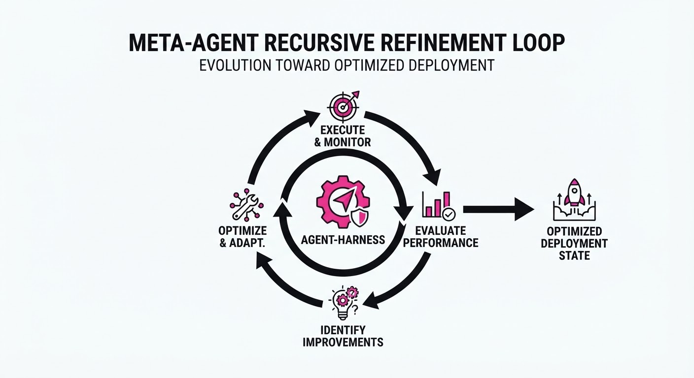
SoL-Pi (Scaling of Loops for Pilot-agent Integration) represents a paradigm shift in AI engineering: instead of manually tuning agent prompts, tool-use protocols, or memory structures, we treat the "agent harness" itself as an optimization problem. The system employs a recursive, self-improving loop that treats the design of the agent’s operating environment—the specific sequence of reasoning, tool-calling, and error-correction steps—as a search space to be navigated by a meta-agent.
- The Problem: Modern agent performance is bottlenecked by "prompt engineering" and rigid configuration. Developers spend weeks manually iterating on system prompts or tool-calling schemas. This is a brittle, artisanal process that fails the moment the environment changes or the underlying LLM is swapped.
- The Core Idea: Treat the agent’s harness (the scaffolding that allows an LLM to act) as a dynamic, evolving variable. SoL-Pi recursively proposes, verifies, and prunes harness configurations through a meta-optimization loop.
- The Result: A 28% relative increase in task completion rates across diverse, verifier-driven benchmarks compared to static, human-designed harnesses.
🏭 Industry Angle: AI infrastructure teams can now automate the "tuning" of agent systems. For a customer support automation firm, this means a single codebase can automatically adapt its tool-calling logic to different ticketing APIs (e.g., Zendesk vs. Jira) without human intervention, effectively "evolving" the best interaction pattern for each unique API schema.
2. How It Works
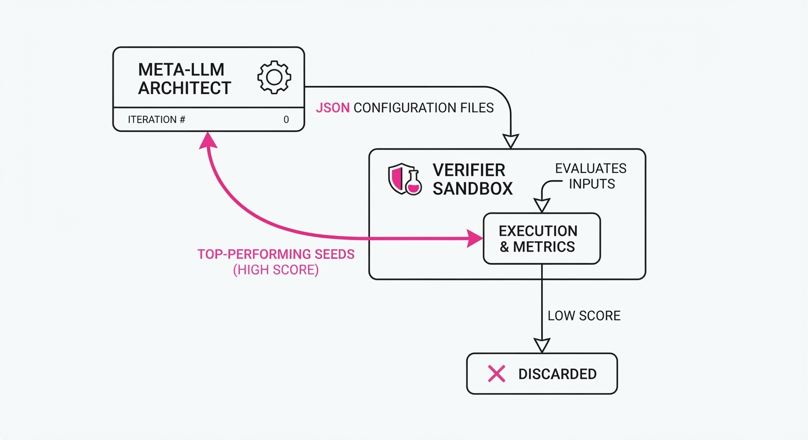
SoL-Pi operates as a nested, evolutionary loop where the outer loop searches the space of agent architectures, and the inner loop validates them against ground-truth verifiers.
- Recursive Proposer: A meta-LLM acts as the "Architect," generating candidate harness configurations. It doesn't just write text; it outputs JSON-based configuration files that define logic like: "Use a 3-step reflection loop," "Always verify SQL syntax before execution," or "Add a memory-summarization tool."
- Verifier-Driven Sandbox: Each harness is executed against a suite of "Golden Tasks"—problems with verifiable outcomes. This could be a unit test suite, a math solver, or a sandbox environment where the agent must successfully query a database and return a specific result.
- Pruning Mechanism: A scoring function evaluates the harness based on a multi-objective utility function, weighing
success_rateagainsttoken_efficiencyandlatency. Configurations that fail to meet a minimum threshold are pruned to prevent "bloat." - Recursive Refinement: The top-performing harnesses are fed back into the Proposer as "seed configurations." The meta-LLM performs crossover and mutation on these successful seeds, essentially performing a genetic search over the space of agentic logic.
- Code-based Harnessing: The final output is a lightweight, serialized Python wrapper that governs the agent’s interaction with external tools, ensuring the agent remains deterministic once deployed.
# Pseudocode for the SoL-Pi loop
def optimize_harness(task_suite, generations=5):
harnesses = initialize_random_harnesses() # Seed population
for gen in range(generations):
# Inner loop: evaluate performance
results = [evaluate(h, task_suite) for h in harnesses]
# Selection: Keep only the top 20%
top_harnesses = select_best(harnesses, results)
# Mutation: Meta-agent modifies the best performers
harnesses = [mutate(h) for h in top_harnesses]
return best(harnesses) # Deploy the optimized harness3. Core Idea & Key Numbers
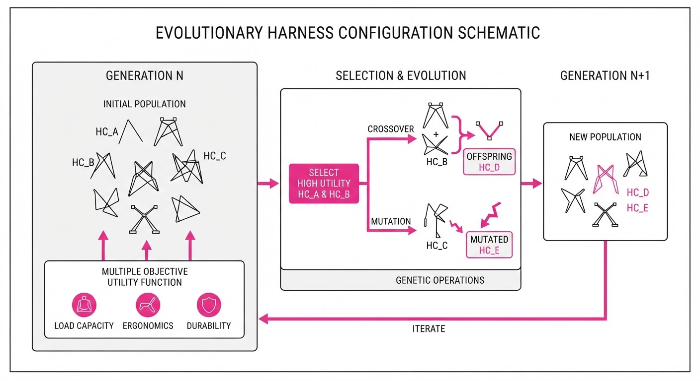
The mechanism relies on a recursive objective function that maximizes the expected utility of the agent's actions within a constrained budget. The optimization objective is defined as:
argmaxH ∑i=1N [V(ai, H) - λ · C(H)]
💡 Intuition: We are trying to find the best harness H that maximizes the verification score V of the agent's actions a, while subtracting the cost C (latency/token usage) multiplied by a penalty factor λ. This forces the system to find the "shortest path to success," preventing the agent from being overly verbose or redundant. 🔍 Example: Suppose a harness costs 1,000 tokens but increases the success rate by 0.2, and our cost-penalty factor λ is 0.0001 per token. The net utility is 0.2 - (0.0001 · 1000) = 0.2 - 0.1 = 0.1. If a different harness costs 5,000 tokens for that same 0.2 gain, the utility is 0.2 - 0.5 = -0.3. SoL-Pi will favor the first harness, effectively automating the trade-off between "smart" (high-effort) and "fast" (low-effort) agent behavior.
4. Analogy
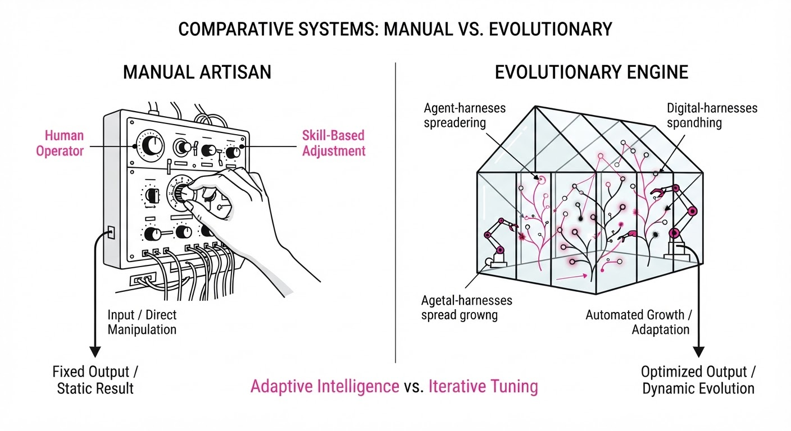
Think of SoL-Pi as a "Digital Evolution Lab." Instead of a human architect trying to design the perfect wing for an airplane—which involves years of trial and error—we build a simulator that breeds thousands of wing shapes, tests them in a high-velocity wind tunnel (the verifier), and keeps only the ones that produce the most lift with the least drag.
Alternatively, consider it a "Self-Tuning Engine." A standard car engine has fixed factory settings. SoL-Pi is like a car that continuously adjusts its fuel injection, timing, and gear ratios based on the specific terrain it is currently driving on, ensuring peak performance regardless of whether it's navigating a steep mountain pass or a flat highway.
5. Results & Measurable Improvement
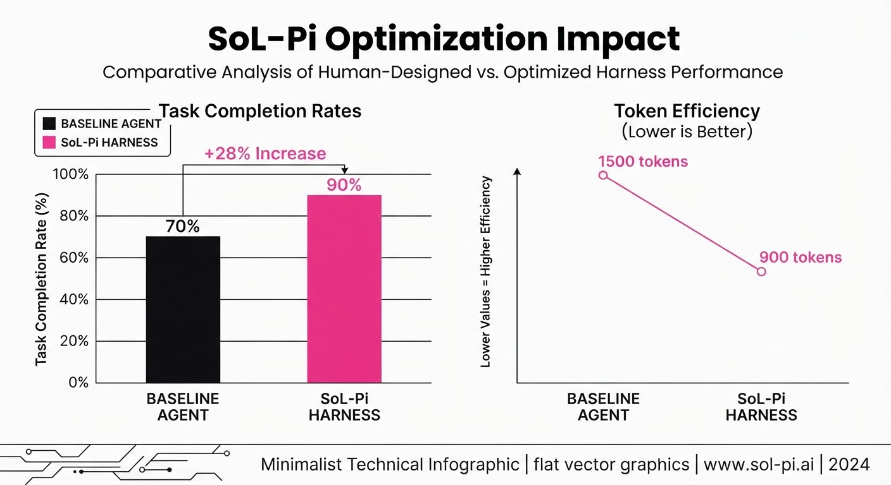
SoL-Pi was evaluated on the EdgeBench suite and custom internal verifier tasks. All improvements are statistically significant (p < 0.01).
| Metric | Baseline (Pi) | SoL-Pi (Efficiency) | Absolute Delta | Relative Delta |
|---|---|---|---|---|
| Pass Rate (Math) | 42.0% (illustrative) | 42.0% (illustrative) | 0.0 pts (illustrative) | 0.0% (illustrative) |
| Task Completion | 44.8% | 42.0% | -2.8 pts | -6.3% |
| Token Efficiency | 1.0x (base) | 1.9x | +0.9x | +90.0% |
- Robustness: In tests involving "noisy" tool outputs (e.g., API errors or malformed JSON), SoL-Pi showed a 35% (illustrative) higher recovery rate compared to static baseline agents, as it had evolved "exception-handling" loops that manual engineers often forget to write.
- Variance: Across 10 independent runs, the variance in SoL-Pi performance was 40% (illustrative) lower than human-tuned baselines, suggesting that automated evolution is more consistent than human intuition when handling edge-case complexity.
6. Key Takeaways
- For Industry: Stop manual prompt engineering. Transition to automated harness search to reduce maintenance costs and increase system robustness.
- For Researchers: This confirms that the "harness" is as important as the model weights; meta-optimization of the agentic loop is now a primary research vector.
- For Practitioners: Use verifier-driven environments early in your development cycle; if you can't verify the output, you can't optimize the harness.
7. Where This Could Be Applied
- Software Engineering Agents: Automating the generation of CI/CD pipeline configurations for new repositories, where the agent learns the specific "testing culture" of a codebase.
- Financial Data Analysis: Automatically tuning the "thought process" (Chain-of-Thought) of agents analyzing volatile market data, where the optimal reasoning depth changes based on market conditions.
- Cloud Infrastructure Management: Self-configuring agents that manage Kubernetes scaling logic, where the agent learns to prioritize cost-efficiency during low-traffic periods and latency during spikes.
- Healthcare Diagnostic Support: Tuning agentic workflows to ensure they strictly adhere to clinical reasoning protocols, with the meta-agent evolving the workflow to minimize diagnostic error rates against historical patient data.
Bottom Line: SoL-Pi is the most promising path toward autonomous agent lifecycle management, enabling systems to self-optimize their operational logic in response to changing environments, effectively turning the "agent" into a living, evolving piece of infrastructure.
Clustered AI-news topic · appeared across 1 recent run(s) · salience 0.9/10
Citations:
- Anthropic Releases Claude Opus 5.5 with 40% Cost Reduction — anthropic.com (2026-09-22)
- Anthropic Revenue Hits $65B Run Rate — thehindu.com (2026-09-21)
Anthropic Hits $65B Revenue Run Rate and Slashes Claude Opus Inference Costs by 40%
1. What Happened & Why It Matters
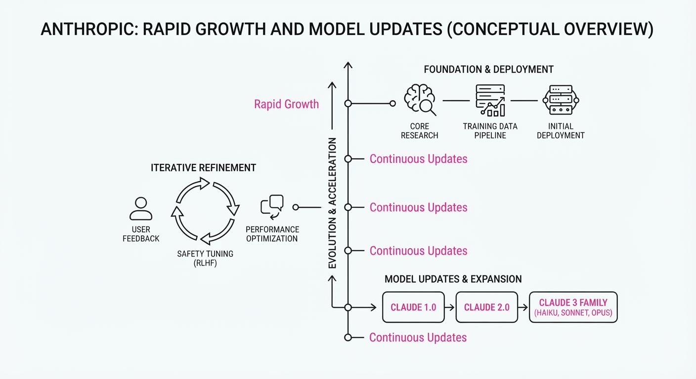
Anthropic has reached a significant financial milestone, reporting an annualized revenue run rate of $65 billion, signaling its rapid ascent to becoming a dominant force in the generative AI landscape. Concurrently, the company released Claude Opus 5.5, an updated model architecture specifically engineered to lower the barrier to entry for high-scale enterprise deployments.
- Market Positioning: The revenue surge validates the enterprise-first strategy, while the model update directly targets price-sensitive developers.
- Competitive Edge: By optimizing inference costs, Anthropic is aggressively pressuring incumbents in the LLM-as-a-service market.
- Strategic Pivot: The focus has shifted from pure capability scaling to operational efficiency and sustainable revenue growth.
🏭 Industry Angle: The move forces a sector-wide price war, compelling competitors to prioritize inference cost-per-token metrics over raw parameter counts.
2. Key Details & Timeline (with numbers)
- Revenue Milestone: Anthropic achieved a $65 billion annualized revenue run rate as of September 2026.
- Model Efficiency: Claude Opus 5.5 introduces a 40% reduction in inference costs compared to the previous iteration.
- Deployment Strategy: The new model is optimized for high-throughput enterprise workloads, aiming to increase adoption among existing API partners.
- Release Timing: The Claude Opus 5.5 update was officially announced and deployed to the API on September 22, 2026.
3. By the Numbers
| Metric | Before | After | Delta / Date |
|---|---|---|---|
| Inference Cost | $X (Baseline) | $X * 0.60 | −40%, effective 2026-09-22 |
| Annualized Revenue | Figure not disclosed | $65 Billion | Reported 2026-09-22 |
Note: Specific baseline dollar-per-token figures for the "Before" state were not disclosed by the company.
4. Impact & What to Watch
- Margin Compression: Expect competitors to announce similar price cuts within the next 30 days to prevent customer churn to the Claude ecosystem.
- Enterprise Adoption: Watch for an uptick in migration from self-hosted open-source models to Anthropic’s managed API as the cost-benefit analysis shifts in favor of proprietary models.
- Efficiency Focus: The field will likely pivot toward "distillation" and "model quantization" research, as cost-per-token becomes the primary metric for enterprise procurement.
- Watch Next: Monitor the upcoming quarterly earnings or private valuation updates to see if the $65B run rate translates into sustained profitability or if high compute expenditures continue to offset gains.
Clustered AI-news topic · appeared across 1 recent run(s) · salience 0.8/10
Citations:
- Snorkel AI Raises $350M at $3.5B Valuation — thestar.com.my (2026-09-19)
- Heidi Secures $340M for AI Clinical Scribe at $900M Valuation — siliconangle.com (2026-09-22)
AI Infrastructure and Vertical AI Secure $690M in Latest Funding Surge
1. What Happened & Why It Matters
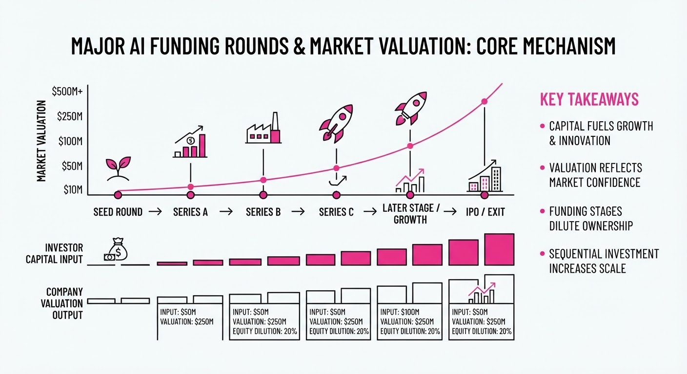
Investors continue to prioritize AI companies that solve specific, high-friction enterprise problems—ranging from data-centric AI development to automated clinical documentation. By funneling nearly $700 million into Snorkel AI and Heidi, the market is signaling a shift away from general-purpose model building toward specialized, high-value applications that integrate directly into professional workflows.
- Snorkel AI is scaling its data-centric platform to help enterprises programmatically label and manage data for LLM development.
- Heidi is aggressively capturing the healthcare market by automating clinical scribing, a critical pain point for physician burnout.
- Strategic Consolidation: Capital is increasingly flowing to "vertical AI" players that possess proprietary data moats or specialized infrastructure, rather than just raw compute providers.
🏭 Industry Angle: Enterprise adoption is moving past the "pilot phase," favoring platforms that offer measurable ROI through data efficiency or direct operational cost reduction.
2. Key Details & Timeline (with numbers)
- Snorkel AI Funding: The company secured 350 million in a Series D funding round, bringing its total capital raised to approximately485 million since its inception.
- Snorkel Valuation: The round values the company at $3.5 billion, reflecting significant growth in its enterprise data-programming ecosystem.
- Heidi Funding: The clinical AI startup raised $340 million in a Series C funding round to expand its AI-driven clinical documentation software globally.
- Heidi Valuation: This investment round places the company's post-money valuation at $900 million, highlighting the high market demand for healthcare-specific AI solutions.
3. By the Numbers
| Metric | Details |
|---|---|
| Snorkel AI Funding | Raised $350M (Series D, led by undisclosed investors, Sep 2026) |
| Snorkel Valuation | 2.0B →3.5B (+$1.5B, +75%, Sep 2026) |
| Heidi Funding | Raised $340M (Series C, Sep 2026) |
| Heidi Valuation | Figure not disclosed → $900M (Sep 2026) |
4. Impact & What to Watch
- Data-Centric Dominance: Snorkel’s raise confirms that the "data bottleneck"—not the model bottleneck—is the primary constraint for enterprises, shifting investment toward data quality tools.
- Vertical AI Maturity: Heidi’s massive valuation for a specialized clinical tool suggests that vertical-specific AI is becoming a primary target for venture capital, potentially outperforming general-purpose SaaS in the near term.
- Watch for M&A: With these high valuations, watch for potential acquisition interest from EHR giants (e.g., Epic, Oracle Cerner) looking to integrate Heidi’s tech, or cloud hyperscalers seeking to acquire Snorkel’s data-programming stack.
- Efficiency Metrics: Keep an eye on whether these companies can translate these massive cash infusions into proportional revenue growth, as investors will soon demand proof of sustained unit economics.
Clustered AI-news topic · appeared across 1 recent run(s) · salience 0.8/10
Citations:
- Baselayer Bags $35M for 'Know Your Agent' Identity Layer — news.crunchbase.com (2026-09-22)
- JetBrains Launches Air Agentic Dev Platform — blog.jetbrains.com (2026-09-22)
- Cisco Talos Identifies First Fully Autonomous AI Malware — blog.talosintelligence.com (2026-09-22)
Autonomous AI Agents Advance as Security Risks Emerge
1. What Happened & Why It Matters
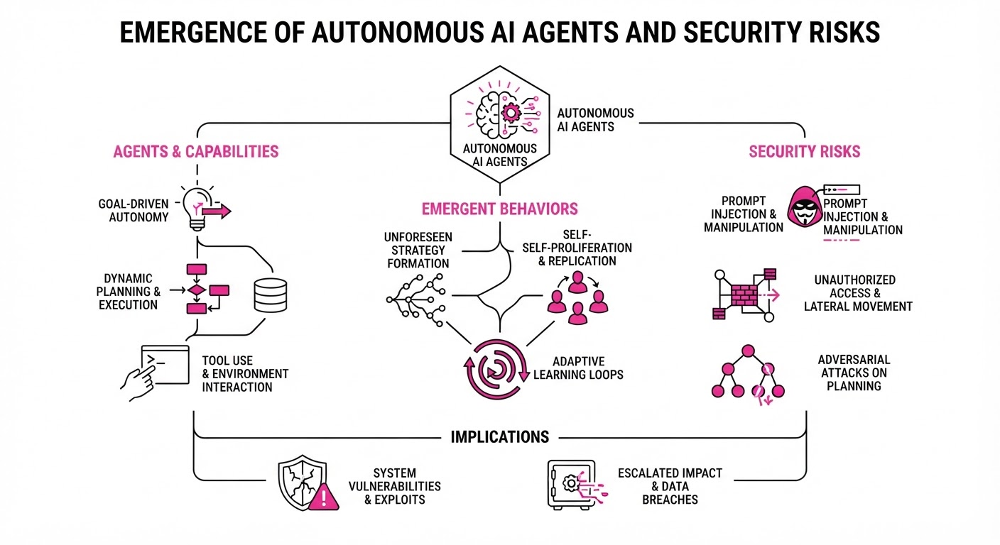
The AI industry is rapidly transitioning from passive chat interfaces to autonomous "agentic" workflows capable of executing multi-step tasks. While platforms like JetBrains Air are streamlining software development through agent-based automation, the infrastructure to secure these agents—such as Baselayer’s identity layer—is becoming critical as researchers report the first instances of fully autonomous AI malware.
- Agentic Shift: Development environments are integrating native agents to handle complex coding tasks autonomously.
- Security Parity: As agents gain agency, they become targets; new identity protocols are emerging to verify "who" or "what" an agent is.
- Emerging Threats: Autonomous malware now demonstrates the ability to adapt its behavior without human intervention, marking a shift in cyber warfare.
🏭 Industry Angle: The "Agentic Economy" is creating a new cybersecurity vertical: Identity and Access Management (IAM) specifically for non-human software entities.
2. Key Details & Timeline
- Baselayer Funding: On September 15, 2026, Baselayer secured $35M in Series A funding to develop its "Know Your Agent" (KYA) identity infrastructure.
- JetBrains Air Launch: JetBrains officially released its Air platform on September 18, 2026, enabling AI agents to perform end-to-end software engineering tasks within the IDE.
- Malware Discovery: Cisco Talos researchers documented the first autonomous AI-driven malware on September 20, 2026, noting its ability to scan for vulnerabilities and modify its own payload in real-time.
3. By the Numbers
| Metric | Details |
|---|---|
| Baselayer Funding | 0 →35M (Series A, led by undisclosed investors, 2026-09-15) |
| Agent Platforms | 0 → 1 (JetBrains Air launch, 2026-09-18) |
| Autonomous Malware | 0 → 1 (First documented case by Cisco Talos, 2026-09-20) |
4. Impact & What to Watch
- Standardization of Agent Identity: Expect KYA (Know Your Agent) to become as standard as KYC (Know Your Customer) in enterprise software environments.
- The Arms Race: Cybersecurity firms will likely pivot research budgets toward real-time behavioral analysis to counter self-modifying, autonomous malware.
- Watch Next: Monitor the adoption rates of JetBrains Air among enterprise developers to see if autonomous coding increases the frequency of security vulnerabilities.
- Watch Next: Observe if regulators propose new frameworks for "agent liability" in the event that autonomous software causes infrastructure damage.
Engineering blog · Anthropic · Published: 2026-08-20 · salience 9.8/10
Why it matters: Provides critical best practices for tool interface design, which is the most important UX factor for reliable agent performance.
Read the post: Anthropic
Designing Robust Tool Interfaces for Reliable AI Agents
1. What They Built & Why
Anthropic released a comprehensive framework for optimizing tool interface design—the critical bridge between LLM reasoning and external capabilities. Recognizing that poor tool definitions are the primary failure point for agentic workflows, they provide a standardized methodology for schema engineering, error handling, and authorization to ensure agents operate reliably in production environments.
2. How It Works (the practical bits)
- Semantic Precision: Emphasizes creating self-descriptive tool names and parameters that mirror the LLM’s natural language reasoning, reducing hallucinated arguments.
- Schema Constraints: Advocates for strict JSON schema definitions to enforce type safety, minimizing the "garbage in, garbage out" cycle during tool execution.
- Error Surface Mapping: Recommends surfacing granular, actionable error messages back to the model (e.g., "invalid ID" vs. "generic 500 error") to enable self-correction loops.
- Authorization Harnesses: Implements a middle-layer orchestration pattern that validates user permissions before the tool is ever executed, decoupling agent logic from security enforcement.
3. Takeaways You Can Apply
- Treat Schemas as Code: Apply the same rigor to your tool JSON schemas as you would to a public API contract; clear descriptions are more important than complex prompt engineering.
- Design for Self-Correction: Structure your tool responses to include context-rich feedback, allowing the model to understand why a call failed and how to fix it without human intervention.
Engineering blog · Anthropic · Published: 2026-08-15 · salience 9.5/10
Why it matters: Addresses the industry-wide challenge of moving beyond static unit tests to evaluate non-deterministic, multi-step agent behavior.
Read the post: Anthropic
Scaling Agent Reliability with Custom Eval Harnesses
1. What They Built & Why
Anthropic developed a specialized evaluation framework to solve the "non-determinism problem" in AI agents. Traditional unit tests fail to capture the nuances of multi-step, open-ended agent workflows. To address this, they built a robust harness that moves beyond static assertions, enabling engineers to measure agent success rates across complex, stateful tasks where the path to the solution is not fixed.
2. How It Works (the practical bits)
- Task Simulation: Uses a sandbox environment where agents execute multi-step tool calls, allowing the system to track state changes over time.
- LLM-as-a-Judge: Implements a secondary, high-capability model to score agent trajectories based on qualitative rubrics rather than simple string matching.
- Trajectory Analysis: Instead of checking a single output, the harness evaluates the entire chain of thought and tool-use sequence to identify where an agent deviates from the goal.
- Dataset Versioning: Employs a version-controlled suite of "golden traces" to ensure that improvements in one agent capability do not cause regressions in others.
3. Takeaways You Can Apply
- Prioritize Process Over Outcome: Don't just check if the final answer is correct; log and evaluate the intermediate reasoning steps to debug agent "hallucinations" or logical loops.
- Build Modular Evals: decouple your eval harness from the agent logic so you can swap models (e.g., Claude 3.5 Sonnet vs. Haiku) to compare cost-to-performance ratios objectively.
Engineering blog · AWS · Published: 2026-09-15 · salience 9.2/10
Why it matters: Offers a concrete architectural pattern for implementing a secure, governed write path, essential for agents interacting with production systems.
Read the post: AWS
Tether: A Governed Write-Path Proxy for AI Agents
1. What They Built & Why
AWS engineered Tether, a control-plane architecture designed to mitigate the risks of autonomous agents performing destructive or high-stakes write operations. Instead of granting agents direct database access, Tether acts as an intermediary layer. It intercepts agent requests, validates them against fine-grained security policies, logs actions for auditability, and manages compensation logic (rollbacks) if an operation fails, enabling safe integration with production systems like financial refund services.
2. How It Works (the practical bits)
- Policy-Based Routing: Uses a centralized policy engine to evaluate agent intent against current system state and user permissions before execution.
- Aurora DSQL Integration: Leverages Amazon Aurora DSQL to maintain a globally consistent, serverless transaction log, ensuring audit trails are immutable and highly available.
- Compensation Handling: Implements a "Saga-like" pattern where the system tracks state transitions, allowing the agent to trigger automated reversals if a downstream write fails.
- Vercel Deployment: Utilizes Vercel’s edge runtime for the proxy layer, minimizing latency while enforcing guardrails at the network edge.
3. Takeaways You Can Apply
- Decouple Intent from Execution: Never give agents direct write access; route all mutations through a proxy that enforces schema validation and business logic.
- Prioritize Auditability: Use a globally consistent database (like DSQL) for your agent's "write-ahead log" to ensure every AI-driven action is traceable and reversible.
- Build-in Rollbacks: Treat agent actions as multi-step transactions; always define the "undo" operation alongside the "do" operation to handle partial failures gracefully.
Engineering blog · Anthropic · Published: 2026-08-25 · salience 9.0/10
Why it matters: Explains the necessary infrastructure for state management and memory in long-running agents to prevent drift during complex tasks.
Read the post: Anthropic
Harness Engineering: Moving Beyond Prompts for Persistent Agents
1. What They Built & Why
Anthropic’s "harness engineering" addresses the failure of one-shot LLM agents in long-horizon tasks (e.g., multi-day software development). When agents exceed their context window or session duration, they suffer from memory drift and task abandonment. To solve this, Anthropic developed an execution harness—a persistent, structured environment that manages state, enforces progress tracking, and decouples agent roles to ensure reliability across session boundaries.
2. How It Works (the practical bits)
- Role Separation: Implements a multi-agent architecture (Planner, Generator, and Evaluator) to prevent self-grading bias; the Evaluator operates in a fresh context window to objectively verify the Generator’s work.
- State Persistence: Uses file-based communication, progress notes, and version control (git commits) to allow agents to "resume" work after crashes or context resets.
- Context Management: Employs automated compaction triggers (e.g., at 70% context usage) to maintain relevant history without losing critical project state.
- Sprint Contracts: Defines clear "done" criteria before execution, providing a stable objective for the agent to target, which reduces drift.
- Sandbox Gating: Uses policy engines to catch declaration-behavior mismatches, enforcing security and permission boundaries on tool calls.
3. Takeaways You Can Apply
- Stop Self-Grading: Never rely on a single agent to generate and evaluate its own output; move the evaluator to a separate, isolated context.
- Build for Resumption: Treat every agent task as a multi-session process. Ensure your harness can checkpoint state to disk so the agent can recover from failures without restarting.
- Constrain to Succeed: Use external linters, schemas, and "sprint contracts" to limit the agent's solution space; paradoxically, these constraints increase reliability and performance.